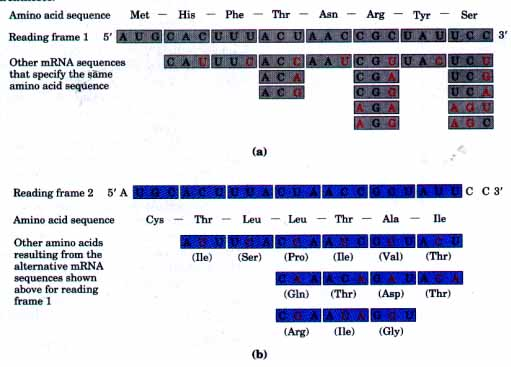
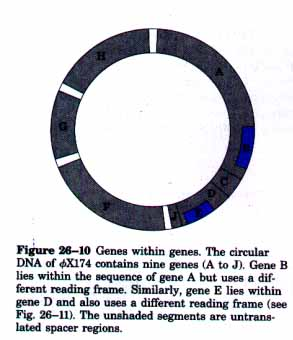
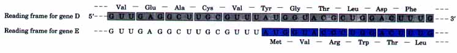
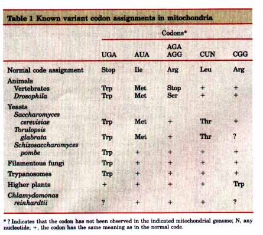
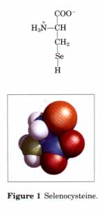
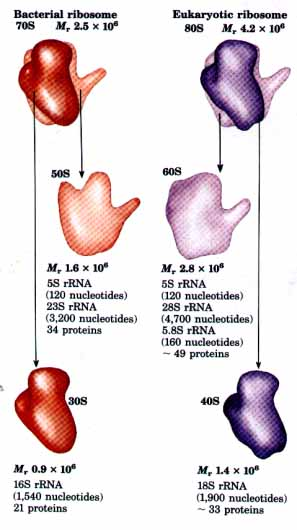

Although a given nucleotide sequence can, in principle, be read in any of its three reading frames, most DNA sequences encode a protein product in only one reading frame. In the coding frame there must be no termination codons, and each codon must correspond to the appropriate amino acid. As illustrated in Figure 26-9, the genetic code imposes strict limits on the numbers of amino acids that can be encoded by the codons of reading frame 2 without changing the amino acids specified by reading frame l. Sometimes one amino acid (and its corresponding codon) may be substituted for another in reading frame 1 and still retain the function of the encoded protein, making it more likely that reading frames 2 or 3 might also encode a useful protein; but even taking these factors into account, the flexibility in other reading frames is very limited. |
 Figure 26-9 An amino acid sequence specified by one reading frame severely limits the potential amino acids encoded by any other reading frame. (a) The codons that can exist in reading frame 1 to produce the indicated amino acid sequence. Most of the permitted nucleotide changes (red) are in the third (wobble> position of each codon. (b) At the top are shown the codons that can exist in reading frame 2 without changing the amino acid sequence encoded by reading frame 1. Below are shown the alternative codons that correspond to the alternative mRNA sequences listed in (a). The possible amino acids that can be encoded by reading frame 2 without changing the amino acid sequence encoded by reading frame 1 are in parentheses. |
Although only one reading frame is generally used to encode a protein and genes do not overlap, there are a few interesting exceptions. In several viruses the same DNA base sequence codes for two different proteins by employing two different reading frames. The discovery of such "genes within genes" arose from the observation that the DNA of bacteriophage ΦX174, which contains 5,386 nucleotide residues, is not long enough to code for the nine different proteins that are known to be the products of the ΦX174 DNA genome, unless the genes overlap. The entire nucleotide sequence of the ΦX174 chromosome was compared with the amino acid sequences of the proteins encoded by the ΦX174 genes; this indicated several overlapping gene sequences. Figure 26-10 shows that genes B and E are nested within A and D, respectively. There are also five cases (not shown) in which the initiation codon of one gene overlaps the termination codon of the other gene. Figure 26-11 shows how genes D and E share a segment of DNA but use different reading frames; a similar situation exists for genes A and B. The sum of all the nested and overlapping sequences accounts completely for the surprisingly small size of the ΦX174 genome compared with the number of amino acid residues in the nine proteins for which it codes. |
 Figure 26-10 Genes within genes. The circular DNA of ΦX174 contains nine genes (A to J). Gene B lies within the sequence of gene A but uses a dif ferent reading frame. Similarly, gene E lies within gene D and also uses a different reading frame (see Fig. 26-11). The unshaded segments are untranslated spacer regions. |

Figure 26-11 Portion of the nucleotide sequence of the mRNA transcript of gene D of ΦX174 DNA, showing how gene E, which is nested within gene D, is coded by a different reading frame from that used by gene D.
This discovery was quickly followed by similar observations in other viral DNAs, including those of phage A, the cancer-causing simian virus 40 (5V40), RNA phages such as Qβ and Q17, and phage G4, a close relative of ΦX174. Phage G4 is remarkable in that at least one codon is shared by three different genes. It has been suggested that overlapping genes or genes within genes may be found only in viruses because the fixed, small size of the viral capsid requires economical use of a limited amount of DNA to code for the variety of proteins needed to infect a host cell and replicate within it. Also, because viruses reproduce (and therefore evolve) faster than their host cells, they may represent the ultimate in biological streamlining.
The genetic code is nearly universal. With the intriguing exception of a few minor variations that have been found in mitochondria, some bacteria, and some single-celled eukaryotes (Box 26-2, p. 906), amino acid codons are identical in all species that have been examined. Human beings, E. coli, tobacco plants, amphibians, and viruses share the same genetic code. Thus it would appear that all life forms had a common evolutionary ancestor with a single genetic code that has been very well preserved throughout the course of biological evolution.
The genetic code tells us how protein sequence information is stored in nucleic acids and provides some clues about how that information is translated into protein. We now turn to the molecular mechanisms of the translation process.
As we have seen for DNA and RNA, the synthesis of polymeric biomolecules can be separated into initiation, elongation, and termination stages. Protein synthesis is no exception. The activation of amino acid precursors prior to their incorporation into polypeptides and the posttranslational processing of the completed polypeptide constitute two important and especially complex additional stages in the synthesis of proteins, and therefore require separate discussion. The cellular components required for each of the five stages in E. coli and other bacteria are listed in Table 26-6. The requirements in eukaryotic cells are quite similar. An overview of these stages will provide a useful outline for the discussion that follows.
| Table 26-6 Components required for the fve major stages in protein synthesis in E. coli | |
| Stage | Necessary components |
| 1. Activation of amino acids | 20 amino acids 20 aminoacyl-tRNA synthetases 20 or more tRNAs ATP Mg2+ |
| 2. Initiation | mRNA N-Formylmethionyl-tRNA Initiation codon in mRNA (AUG) 30S ribosomal subunit 50S ribosomal subunit Initiation factors (IF-1, IF-2, IF-3) GTP Mg2+ |
| 3. Elongation | Functional 70S ribosome (initiation
complex) Aminoacyl-tRNAs specified by codons Elongation factors (EF-Tu, EF-Ts, EF-G) Peptidyl transferase GTP Mg2+ |
| 4. Termination and release | Termination codon in mRNA Polypeptide release factors (RFI, RFz, RF3) ATP |
| 5. Folding and processing | Specific enzymes and cofactors for removal of initiating residues and signal sequences, additional proteolytic processing, modification of terminal residues, attachment of phosphate, methyl, carboxyl, carbohydrate, or prosthetic groups |
Stage 1: Actiuation of Amino Acids During this stage, which takes place in the cytosol, not on the ribosomes, each of the 20 amino acids is covalently attached to a specific tRNA at the expense of ATP energy. These reactions are catalyzed by a group of Mg2+-dependent activating enzymes called aminoacyl-tRNA synthetases, each specific for one amino acid and its corresponding tRNAs. Where two or more tRNAs exist for a given amino acid, one aminoacyl-tRNA synthetase generally aminoacylates all of them. Aminoacylated tRNAs are commonly referred to as being "charged."
BOX 26-2Natural Variations in the Genetic CodeIn biochemistry, as in other disciplines, exceptions to general rules can be problematic for educators and frustrating for students. At the same time they teach us that life is complex and inspire us to search for more surprises. Understanding the exceptions can even reinforce the original rule in surprising ways. It would seem that there is little room for variation in the genetic code. Recall from Chapters 6 and 7 that even a single amino acid substitution can have profoundly deleterious effects on the structure of a protein. Suppose that somewhere there was a bacterial cell in which one of the codons specifying alanine suddenly began specifying arginine; the resulting substitution of arginine for alanine at multiple positions in scores of proteins would unquestionably be lethal. Variations in the code occur in some organisms nonetheless, and they are both interesting and instructive. The very rarity of these variations and the types of variations that occur together provide powerful evidence for a common evolutionary origin of all living things. The mechanism for altering the code is straightforward: changes must occur in one or more tRNAs, with the obvious target for alterations being the anticodon. This will lead to the systematic insertion of an amino acid at a codon that does not specify that amino acid in the normal code (Fig. 26-7). The genetic code, in effect, is defined by the anticodons on tRNAs (which determine where an amino acid is placed in a growing polypeptide) and by the specificity of the enzymes-aminoacyl-tRNA synthetases-that charge the tRNAs (which determine the identity of the amino acid attached to a given tRNA). Because of the catastrophic effects most sudden code changes would have on cellular proteins, one might predict that code alterations would occur only in cases where relatively few proteins would be affected. This could happen in small genomes encoding only a few proteins. The biological consequences of a code change could also be limited by restricting changes to the three termination codons, because these do not generally occur within genes (see Box 26-1 for exceptions to this rule). A change that converts a termination codon to a codon specifying an amino acid will affect termination in the products of only a subset of genes, and sometimes the effects in those genes will be minor because some genes have multiple (redundant) termination codons. This pattern is in fact observed. Changes in the genetic code are very rare. Most of the characterized code variations occur in mitochondria, whose genomes encode only 10 to 20 proteins. Mitochondria have their own tRNAs, and the code variations do not affect the much larger cellular genomes. The most common changes in mitochondria, and the only changes observed in cellular genomes, involve termination codons. In mitochondria, the changes can be viewed as a kind of genomic streamlining. Vertebrate mDNAs have genes that encode 13 proteins, 2 rRNAs, and 22 tRNAs (see Fig. 18-29). An unusual set of wobble rules allows the 22 tRNAs to decode all 64 possible codon triplets, rather than the 32 tRNAs required for the normal code. Four codon families (where the amino acid is determined entirely by the first two nucleotides) are decoded by a single tRNA with a U in the first (or wobble) position in the anticodon. Either the U pairs somehow with all four bases in the third position of the codon, or a "two out of three" mechanism is used in these cases (i.e., no pairing occurs at the third position of the codon). Other tRNAs recognize codons with either A or G in the third position, and yet others recognize U or C, so that virtually all the tRNAs recognize either two or four codons. In the normal code, only two amino acids are specified by single codons, methionine and tryptophan (Table 26-4). If all mitochondrial tRNAs recognize two codons, then additional codons for Met and Trp might be expected in mitochondria. Hence, the single most common code variation observed is the UGA specification, from "termination" to Trp. A single tRNATrp can be used to recognize and insert a Trp residue at the codon UGA and the normal Trp codon UGG. Converting AUA from an Ile codon to a Met codon has a similar effect; the normal Met codon is AUG, and a single tRNA can be used for both codons. This turns out to be the second most common mitochondrial code variation. The known coding variations in mitochondria are summarized in Table l. Turning to the much rarer changes in the codes for cellular (as distinct from mitochondrial) genomes, we find that the only known variation in a prokaryote is again the use of UGA to encode TI-p residues in the simplest free-living cell, Mycoplasma capricolum. In eukaryotes, the only known extramitochondrial coding changes occur in a few species of ciliated protists, where the termination codons UAA and UAG both specify glutamine.   Changes in the code need not be absolute-a codon need not always encode the same amino acid. In E. coli there are two examples of aminoacids being inserted at positions not specified in the general code. The first is the occasional use of the codon GUG (Val) as an initiating codon. This occurs only for those genes in which the GUG is properly located relative to special translation initiating signals in the mRNA (as discussed later in this chapter) that override the normal coding pattern. Thus, GUG has an altered coding specification only when it is positioned within a certain "context" of other sequences. The use of contextual signals to alter coding patterns also applies to the second E. coli example. A few proteins in all cells (e.g., formate dehydrogenase in bacteria and glutathione peroxidase in mammals) require the element selenium for their activity. It is generally present in the form of the modified amino acid selenocysteine (Fig. 1). Modified amino acids are generally produced in posttranslational reactions (described later in this chapter), but in E. coli, selenocysteine is introduced into formate dehydrogenase during translation in response to an in-frame UGA codon. A specialized type of serine tRNA, present at lower levels than other serine tRNAs, recognizes UGA and no other codons. This tRNA is charged with serine, and the serine is then enzymatically converted to selenocysteine prior to its use on the ribosome. The charged tRNA will not recognize just any UGA codon; instead some contextual signal in the mRNA, still to be identified, permits the tRNA to recognize only those few UGA codons that specify selenocysteine within certain genes. In effect, there are 21 standard amino acids in E. coli, and UGA doubles as a codon for termination and (sometimes) for selenocysteine. These variations tell us that the code is not quite as universal as once believed, but they also tell us that flexibility in the code is severely constrained. It is clear that the variations are derivatives of the general code; no example of a completely different code has ever been found. The variants do not provide evidence for new forms of life, nor do they undermine the concepts of evolution or universality of the genetic code. The limited scope of code variants strengthens the principle that all life on this planet evolved on the basis of a single (very slightly flexible) genetic code. |
Stage 2: Initiation Next, the mRNA bearing the code for the polypeptide to be made binds to the smaller of two major ribosomal subunits; this is followed by the binding of the initiating aminoacyl-tRNA and the large ribosomal subunit to form an initiation complex. The initiating aminoacyl-tRNA base-pairs with the mRNA codon AUG that signals the beginning of the polypeptide chain. This process, which requires GTP, is promoted by specific cytosolic proteins called initiation factors.
Stage 3: Elongation The polypeptide chain is now lengthened by covalent attachment of successive amino acid units, each carried to the ribosome and correctly positioned by its tRNA, which base-pairs to its corresponding codon in the mRNA. Elongation is promoted by cytosolic proteins called elongation factors. The binding of each incoming aminoacyl-tRNA and the movement of the ribosome along the mRNA are facilitated by the hydrolysis of two molecules of GTP for each residue added to the growing polypeptide.
Stage 4: Termination and Release The completion of the polypeptide chain is signaled by a termination codon in the mRNA. The polypeptide chain is then released from the ribosome, aided by proteins called release factors.
Stage 5: Folding and Processing In order to achieve its biologically active form the polypeptide must fold into its proper three-dimensional conformation. Before or after folding, the new polypeptide may undergo enzymatic processing to remove one or more amino acids from the amino terminus; to add acetyl, phosphate, methyl, carboxyl, or other groups to certain amino acid residues; to cleave the protein proteolytically; or to attach oligosaccharides or prosthetic groups.
| In our expanded discussion of these
stages a particular emphasis will be placed on stage 1.
The reason is evident on considering the overall goal of
the process: to synthesize a polypeptide chain with a
deimed sequence. To accomplish this task, two fundamental
chemical requirements must be met: (1) the carboxyl group
of each amino acid must be activated to facilitate
formation of a peptide bond (see Fig. 5-15), and (2) a
link must be maintained between each new amino acid and
the information that encodes it in the mRNA. As we will
see, both of these requirements are met by attaching the
amino acid to a tRNA, and attaching the right amino acid
to the right tRNA is therefore critical to the overall
process of protein biosynthesis. Before examining each stage in detail, we must introduce two key components in protein biosynthesis: the ribosome and tRNAs. |
 Figure 26-12 Components of bacterial and eukaryotic ribosomes. The designation S (Svedberg units) refers to rates of sedimentation in the centrifuge. The S values (sedimentation coefficients) are not necessarily additive when subunits are combined. |